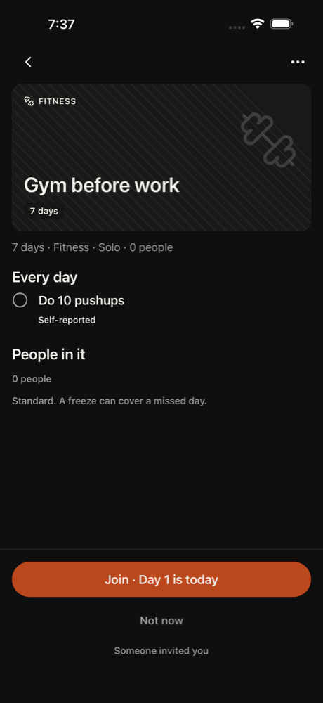
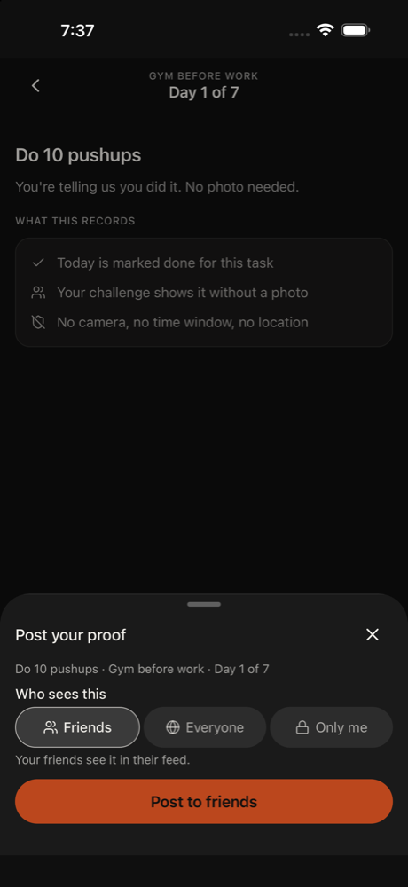
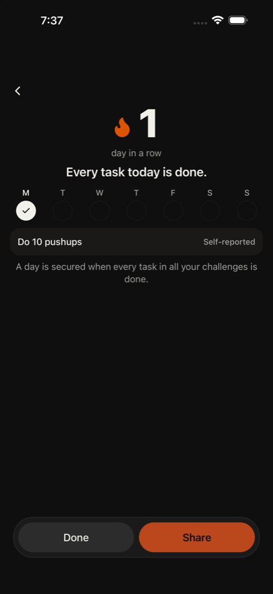
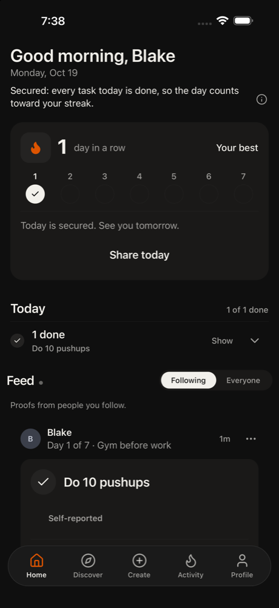
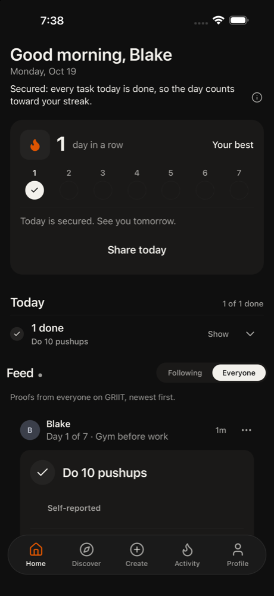
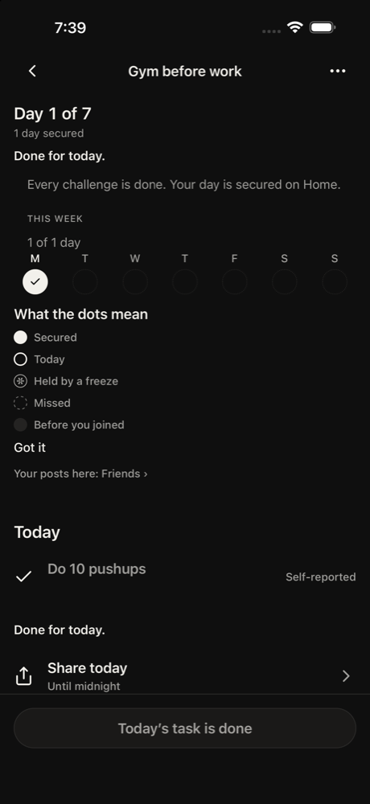
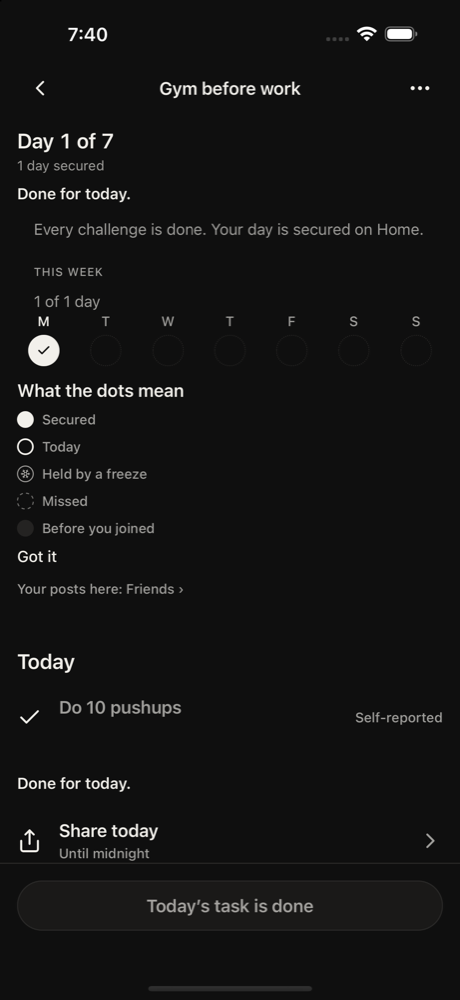
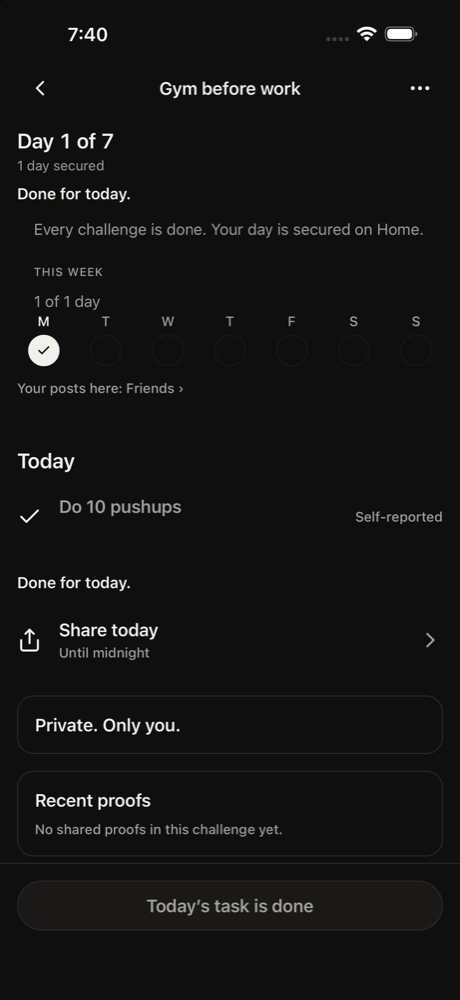
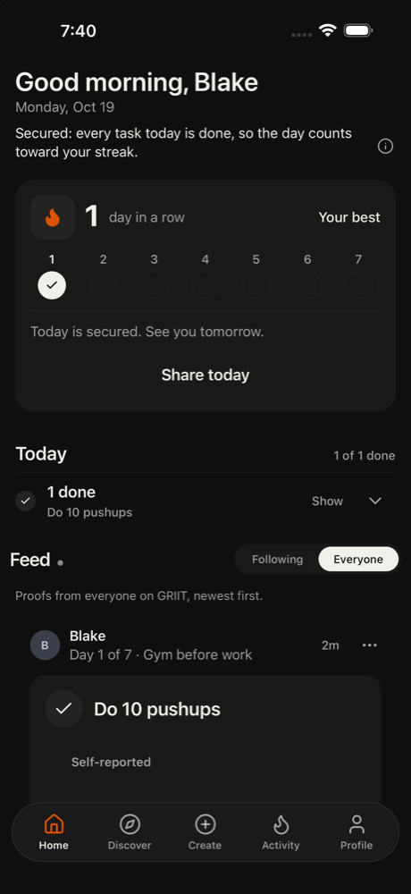
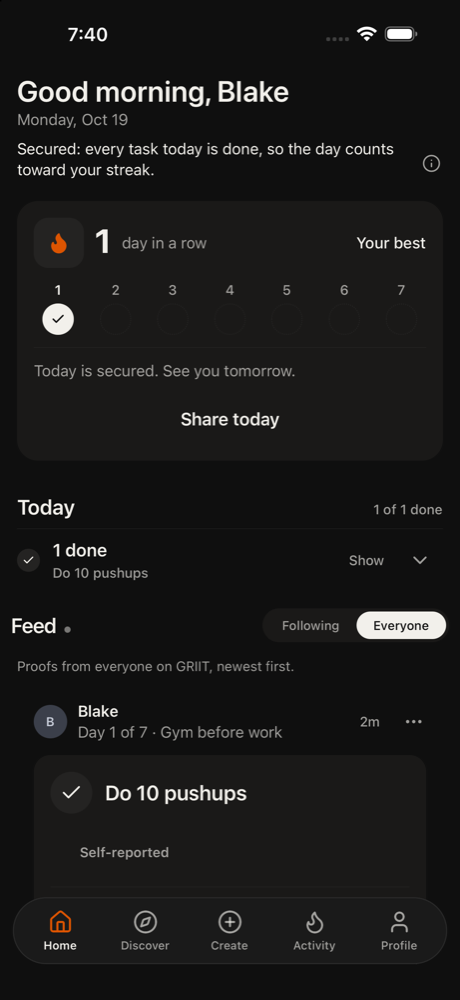

1. other tap Join · Day 1 is today
This is the challenge Kim invited me to. I'll join it.
neutral · 12937ms
Friends with Kim. Got Kim's invite link.
Kim asked them to join. Tech med, patience 3, phone small, text default, curious, English native.
Funnel stage: social. Stages: opened → home → joined → completed → shared → social. Steps 19. 281s. is_test true. Gave up. home repeated 3 times.
GRIIT iPhone 16. Persona phone size was recorded and not applied, because this is the simulator that has the app installed. Text size applied: large. Cleanup: kept
1. other tap Join · Day 1 is today
This is the challenge Kim invited me to. I'll join it.
neutral · 12937ms

2. home tap Done
I joined and now it asks if I did the pushups. I'll mark it done to move on and look for Kim's post.
neutral · 5478ms

3. home tap Post to friends
Sheet asks to post proof. Friends is already selected, so I'll post to friends and then look for Kim's post.
neutral · 22986ms

4. other tap Done
Day is secured with a 1-day streak. I need to find Kim's proof post, so I'll tap Done to leave this screen and go back to the feed.
satisfied · 12663ms
5. home scroll 50%,70%
The feed shows only my own post so far. I need to scroll down to find Kim's proof post.
neutral · 9373ms
6. home scroll 50%,70%
Still only my own post is visible. I'll keep scrolling down to find Kim's proof post.
neutral · 17354ms
7. home tap Show feed from people you follow
The Everyone feed only shows my own post and scrolling hasn't changed anything. I'll switch to the Following tab, since Kim should be someone I follow after joining her challenge.
Confusion: Where is Kim's post? The feed only shows mine.
neutral · 16954ms

8. home tap Show feed from everyone
Following only shows my own post. Kim's post isn't here, so I'll check Everyone again and look for her post or open the challenge from the card.
Confusion: Kim's post isn't in either feed so far.
neutral · 19628ms

9. home tap Open Gym before work challenge
Kim's post isn't in the feed, only mine. I'll open the Gym before work challenge from the card to look for Kim's proof there.
Confusion: Kim's proof isn't showing in the feed, only my own post.
neutral · 7464ms

10. home scroll 50%,70%
I'm in the challenge now. There's a 'Recent proofs' section lower down, which is probably where Kim's post is. I'll scroll down to it.
neutral · 12964ms

11. home scroll 50%,70%
The Recent proofs section is in the element list but I can't see it on screen yet. I'll scroll down more to see if Kim's proof is there.
neutral · 6267ms

12. home scroll 50%,50%
The screen hasn't changed after scrolling from 70%. I'll try a different scroll start point to reach Recent proofs further down.
neutral · 14418ms

13. home scroll 50%,80%
The page still hasn't moved. I'll scroll again from a lower start point to reach Recent proofs and look for Kim's post.
Confusion: The page doesn't seem to scroll and Recent proofs is out of view.
frustrated · 6837ms

14. home tap Recent proofs
Scrolling isn't moving the page. The Recent proofs label is in the element list, so I'll tap it to see if it opens or expands Kim's proof.
Confusion: Page won't scroll to Recent proofs
frustrated · 16242ms

15. home tap Got it
Scrolling and tapping Recent proofs did nothing. The dots legend is taking up space, so I'll dismiss it with Got it to see if the page changes and Recent proofs shows up.
Confusion: Page won't scroll, can't find Kim's proof
frustrated · 6468ms

16. home tap Go back
Recent proofs says no shared proofs in this challenge yet, so Kim's post isn't here. I'll go back and check the feed on Home.
Confusion: "No shared proofs in this challenge yet."
neutral · 16495ms

17. home none
Error: empty model reply
frustrated · 4840ms

18. home scroll 50%,70%
I'm back on Home. The feed on Everyone only shows my own post so far. I'll scroll down to look for Kim's proof post.
neutral · 17897ms
19. home abort
Error: Gave up. home repeated 3 times.
frustrated · 3171ms